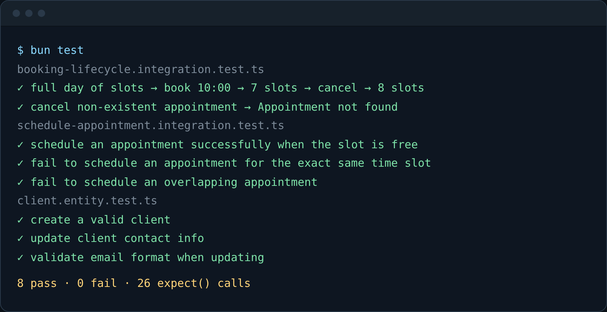

Диалог
bun test / booking-domainbun test · 8 тестов
system
$ bun test
system
booking-lifecycle.integration.test.ts
system
✓ full day of slots → book 10:00 → 7 slots → cancel → 8 slots
system
✓ cancel non-existent appointment → Appointment not found
system
8 pass · 0 fail · 26 expect() calls
Экраны

Что умеет
- Агрегат DailySchedule с инвариантом против пересечений.
- Запись клиента на слот с длительностью.
- Отмена заявки и возврат слота.
- Расчёт свободных часовых окон с 9:00 до 17:00.
- Порты для подмены хранилища.
- In-memory адаптеры для тестов и демо.
Как устроено
domain/агрегат, сущность, value object, инварианты
application/3 use case и 4 порта
infrastructure/in-memory адаптеры
composition.tsсвязывание портов и адаптеров
file tree14 строк
src/
├── domain/
│ ├── daily-schedule.aggregate.ts
│ ├── appointment.entity.ts
│ ├── time-slot.vo.ts
│ └── date-key.ts
├── application/
│ ├── ports.ts
│ ├── schedule-appointment.use-case.ts
│ ├── cancel-appointment.use-case.ts
│ └── get-available-time-slots.use-case.ts
├── infrastructure/
│ └── in-memory.adapters.ts
└── composition.tsЧто реально, а что mock
Ниже — фактическое состояние проекта. Всё, что помечено как mock или отсутствует, не выдаётся за готовую функцию.
| Пункт | Состояние |
|---|---|
| Часы | mock 9–17 и часовые слоты захардкожены |
| Часовые пояса | ограничение локальное время процесса |
| Ресурсы | ограничение одно расписание на день, без мастеров |
| Race condition | ограничение защита внутри агрегата, не в БД |
| Production | ограничение in-memory адаптеры не подходят |
Как читать таблицу. «Не готово» — реализации нет в репозитории. «Ограничение» — функция есть, но работает в узких рамках. Это проверяется по README и коду.
Запуск
.env
# переменные не нужныterminal
bun install
bun test
bun run demoДемо:
bun run demo создаёт расписание на завтра, бронирует 10:00, показывает 7 свободных слотов вместо 8, отменяет заявку и возвращает восьмой.Что дальше
- Resource и политики бронирования (часы / дни).
- Часовые пояса и хранение в UTC.
- Транзакции и уникальные индексы в Postgres.
- Перенос заявки и очередь уведомлений.